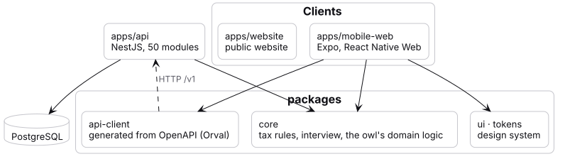

5.1 Packages

(source: packages.puml)
| Package | Responsibility | Workspace dependencies |
|---|---|---|
packages/core |
tax law as pure functions, interview rules, the owl's domain logic | none |
packages/api-client |
typed client, generated from apps/api/openapi.json |
none |
packages/tokens, packages/ui |
design tokens and components | ui uses tokens |
apps/api |
REST API under /v1, MCP server under /mcp, authentication, persistence |
core |
apps/mobile-web |
the application in the browser | core, api-client, ui, tokens |
apps/website |
public website | none |
The API is split into 50 folders under apps/api/src, one per topic (lstb, rental, receipt, advisor, …) plus cross-cutting ones (auth, prisma, audit, common, config, telemetry). architecture-subsystems.md shows the most important ones from the inside.
5.2 Inside the core
The five folders are layers. Each one imports only the folders below it:
| Folder | Content | Files |
|---|---|---|
math/ |
the tariff of § 32a EStG (Income Tax Act), solidarity surcharge, parameters per tax year and the years in which rules change | 3 |
common/ |
working days and public holidays, postal codes, tax offices, bank codes, tax-id check, PII masking, the Range of an estimate |
18 |
domains/ |
verticals: wages, pensions, capital income, rental, cross-border, church tax, pension provision, self-employment (business/, ledger/), receipts, year history; the calculation model calculation.ts, the assessment reconciliation, the filing-type comparison and the answer model answers.ts |
89 |
engine/ |
the tax estimate for one person and for a married couple, business income, the couple comparison | 6 |
interview/ |
question catalogue and reachability, the cockpit range, the owl's domain logic and ports | 42 |
Measured imports between the folders (number of import statements, tests excluded, as of 2026-11-23):
| from ↓ to → | math | common | domains | engine | interview |
|---|---|---|---|---|---|
| math | 0 | 0 | 0 | 0 | |
| common | 2 | 0 | 0 | 0 | |
| domains | 37 | 13 | 0 | 0 | |
| engine | 8 | 5 | 17 | 0 | |
| interview | 8 | 7 | 42 | 2 |
Every cell above the diagonal is 0: the order is math → common → domains → engine → interview, and there is no cycle between folders. The architecture test (packages/core/src/architecture.test.ts) enforces this without exceptions. Until 2026-11-22, 23 files in domains imported from engine (the calculation model, the assessment types) or from interview (the answer model); those modules now sit in domains, and Range sits in common. Between individual files there is no cycle of value imports either.
The same test forbids a year compared with a bare literal (year >= 2025) anywhere in the core except math/tax-parameters.ts. A rule that changes with the year names that year there, in RULE_CHANGE_YEARS (read with appliesFrom) or in a *_STEPS table (read with valueForYear).